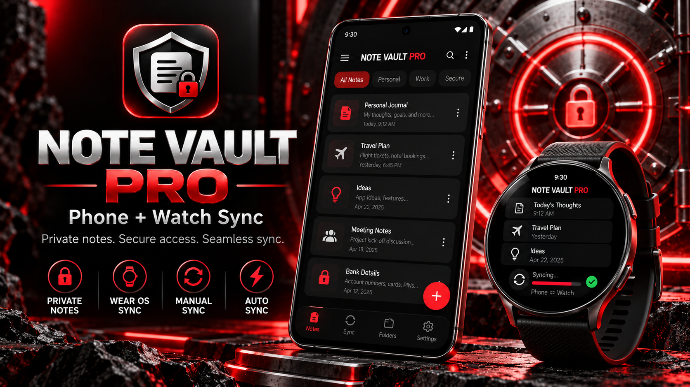
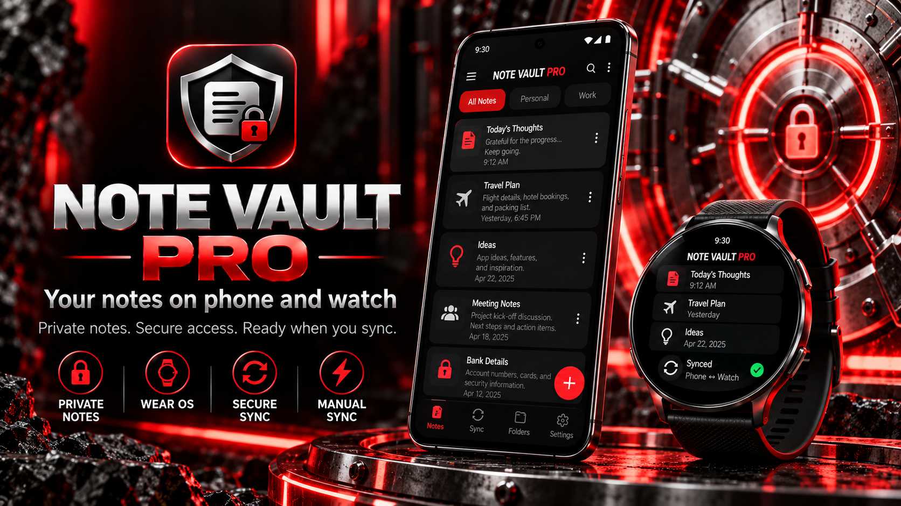
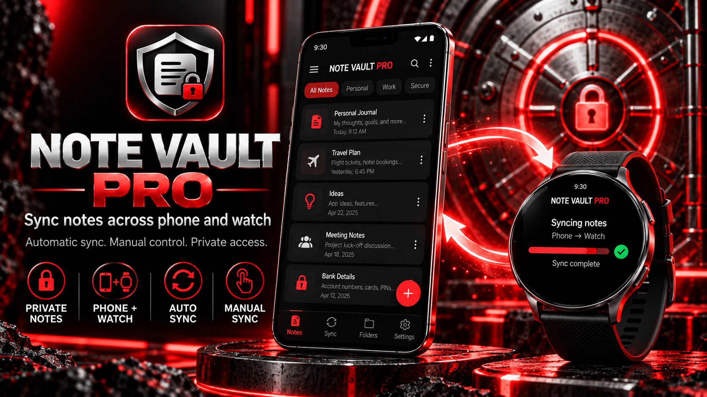
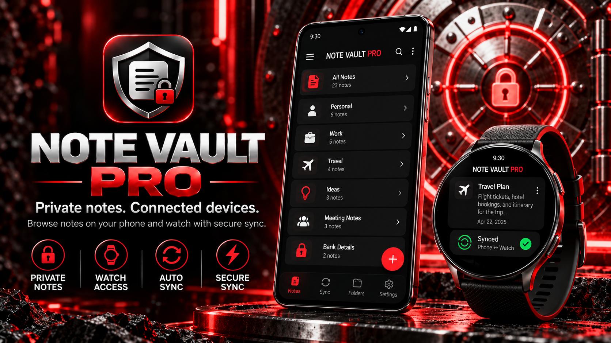
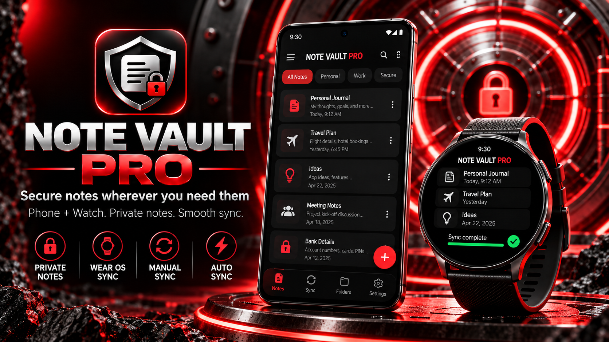
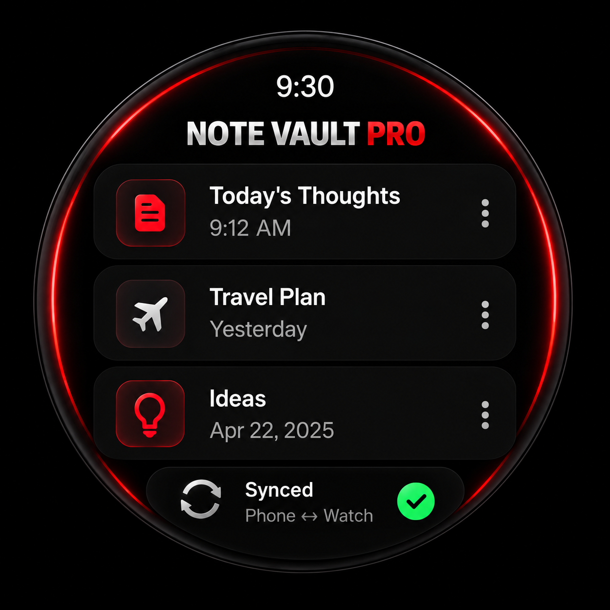
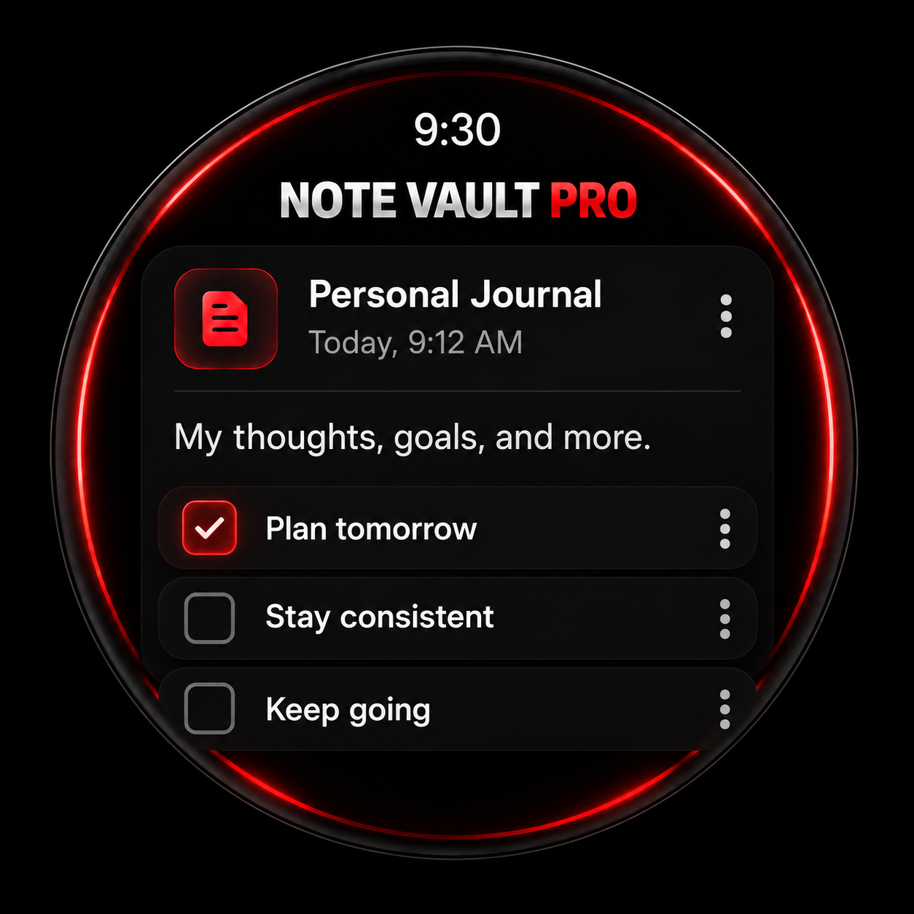
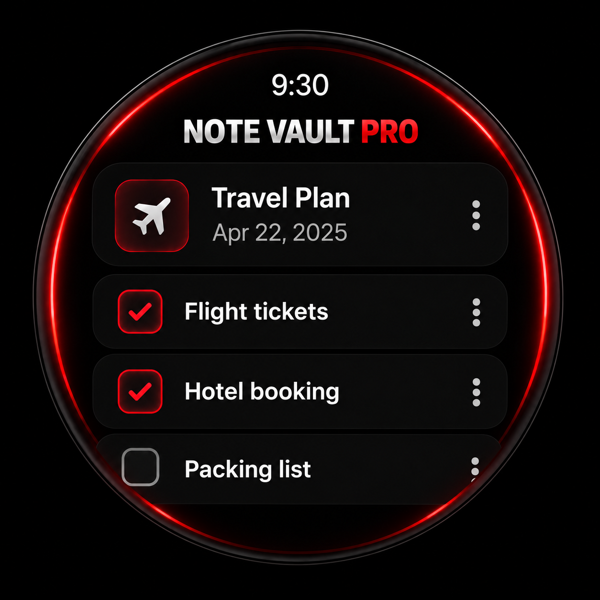

NOTE VAULT PRO
Create, organize and manage notes on Android and compatible smartwatches.
Próximamente
Screenshots / Galeria








Create, organize and manage notes on Android and compatible smartwatches.
Próximamente







